화학분석기사(구) (2010-05-09 기출문제)
1과목: 일반화학
1. 카르보닐(carbonyl)기를 가지고 있지 않은 것은?
- 알데히드
- 아미드
- 에스테르
- 페놀
(정답률: 62%)

2. 25℃에서 용해도곱 상수(Ksp)가 1.6x10-5일 때, 염화 납(II)(PdCl2)의 용해도(mo/L)는 얼마인가?
- 1.6×10-2
- 0.020
- 7.1×10-5
- 2.1
(정답률: 58%)
3. 원자에 대한 설명 중 틀린 것은?
- 수소원자(H)는 1개의 중성자와 1개의 양성자 그리고 1개의 전자로 이루어져 있다.
- 수소원자에서 전자가 빠져나가면 수소이온 (H+)이 된다.
- 수소원자에서 전자가 빠져나간 것이 양성자이다.
- 탄소의 경구처럼 수소 역시 동위원소들이 존재한다.
(정답률: 72%)
4. 전지에 대한 설명 중 틀린 것은?
- 불타전지는 자발적으로 작동되는 전기화학 전지이다.
- 전지에서 산화가 일어나는 전극에서는 전자를 낸다.
- 볼타전지에서 산화가 일어나는 전극은 아연전극이다.
- 전해전지에서 산화환원반응을 일어나게 하기 위해서는 전기에너지가 필요 없다.
(정답률: 68%)
5. 525℃에서 다음 반응에 대한 평형상수 K값은 3.35×10-3mol/L이다. 이 때 평형에서 이산화탄소 농도를 구하면 얼마인가?
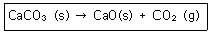
- 0.84×10-3mol/L
- 1.68×10-3mol/L
- 3.35×10-3mol/L
- 6.77×10-3mol/L
(정답률: 66%)
6. 유기화합물의 이름이 틀린 것은?
- CH3-(CH2)4-CH3:헥산
- C2H5OH:에틸알코올
- C2H5OC2H5:디에틸에테르
- H-COOH:벤조산
(정답률: 78%)
7. C6H14의 분자시을 가지는 화합물은 몇 가지 구조이성질체가 가능한가?
- 3
- 4
- 5
- 6
(정답률: 66%)
8. 다음 반응이 일어난다고 할 때 산화되는 물질은?
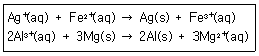
- Ag+(aq), Al3+(aq)
- Fe2+(aq), Mg(s)
- Ag+(aq), Mg(s)
- Fe2+(aq), Al3+(aq)
(정답률: 78%)
9. 다음 중 산의 세기가 가장 강한 것은?
- HCIO
- HF
- CH3COOH
- HCI
(정답률: 69%)
10. 15℃에서 물의 이온화상수 Kw 는 0.45 × 10-14 이다. 15℃에서 물 속의 H3O+의 농도(M)는?
- 1.0×10-7
- 1.5×10-7
- 6.7×10-8
- 4.2×10-15
(정답률: 69%)
11. 용해도에 관한 설명 중 틀린 것은?
- 특별한 조건에서 용액의 최대 용해도를 초과한 용액을 과포화되었다고 한다.
- 어떤 주어진 온도에서 최대로 녹을 수 있는 용질의 양을 포함하는 용액을 포화되었다고 한다.
- 일반적으로 고체화합물의 용해도는 용액의 온도가 올라가면 감소한다.
- 용액의 농도가 용액의 최대 용해도보다 적을 때는 불포화 되었다고 한다.
(정답률: 83%)
12. 다음 물질의 극성에 관한 설명 중 틀린 것은?
- 물은 극성 물질이다.
- 염화수소는 극성 물질이다.
- 암모니아는 비극성 물질이다.
- 이산화탄소는 비극성 물질이다.
(정답률: 72%)
13. 황산구리(II) 수용액을 통하여 2A 의 전류를 약 몇 초간 흘려주어야 1.36g 의 구리가 석출되는가? (단, 1F는 96500C/mol이며, 구리의 원자량은 63.5이다.)
- 736
- 1033
- 2065
- 2567
(정답률: 45%)
14. 스티렌(Styrene)의 실험식은 CH이고, 이것의 분자량은 약 104.1g/mol이다. 이 화합물의 분자식은?
- C2H4
- C8H8
- C10H12
- C6H6
(정답률: 81%)
15. 순도가 96wt% 인 진한 황상용액의 몰랄농도는 약 몇 m 인가? (단, 원자량은 K가 39.10, 0는 16.00, H는 1.008, S는 32.06이다.)
- 20
- 135
- 200
- 245
(정답률: 60%)
16. 몰랄농도가 3,24m 인 K2S04 수용액 내 K2SO4의 몰분율은? (단, 원자량은 K가 39.10, 0는 16.00, H는 1.008, S는 32.06이다.)
- 0.36
- 0.036
- 0.551
- 0.⑤51
(정답률: 55%)
17. 다원자 이온 중 명명법이 틀린 것은?
- 아염소산=CIO-
- 아황산=SO32-
- 염소산=CIO3-
- 과염소산=CIO4-
(정답률: 62%)
18. 수용액 중 H+ 이온의 농도가 0.1M 이다. H+이온의 농도를 pH 로 나타내면?
- 0.01
- 0.1
- 1
- 10
(정답률: 77%)
19. 다음 중 수소의 지량 백분율(%)아 가장 큰 것은?
- HCI
- H2O
- H2SO4
- H2S
(정답률: 72%)
20. 탄소와 수소로만 이루어진 탄화수소 중 탄소의 질량 백분율이 85.6% 인 화합물의 실헙식은?
- CH
- CH2
- C3H
- C6H
(정답률: 65%)
2과목: 분석화학
21. 0.18M NaCl 용액에 담겨있는 은 전극의 전위는? (단, Nernst 식에서 (RT/F)=0.5916V이며 기준전극은 표준수소전극(SHE)이고, Ag++e-⇄Ag(s)에 대한 표준전극전위 E0는 0.799V, AgCl의 용해도곱상수 Ksp는 1.8×10-8이다.)
- 0.085
- 0.185
- 0.285
- 0.385
(정답률: 21%)
22. EDTA(etylenediaminetetraacetic acid, H4Y)를 이용한 금속이온 적정에 대한 설명 중 올바른 것은?
- EDTA(H4Y) 착물형성 반응에 pH와 관계없이 관여하는 화학종은 H2Y2-이다.
- EDTA(H4Y) 착물형성 반응에 관여하는 화학종은 Y4-이다.
- EDTA(H4Y) 착물형성 반응은 pH가 낮을 경우에만 화학종이 Y4-이 관여한다.
- EDTA(H4Y) 착물형성 반응은 pH가 높을 경우에만 화학종 H2Y2-이 관여한다.
(정답률: 60%)
23. EDTA를 이용한 금속이온 적정에서 보조 착염제(auxiliary complexing agent)에 대한 설명 중 틀린 것은?
- 주로 알칼리성 용액에서 적정할 때 사용한다.
- EDTA가 없을 때 금속이온이 수산화물로 침전되는 것은 막아준다.
- 보조 착염제와 금속이온과의 형성상수가 EDTA와 금속이온의 형성상수보다 커야 한다.
- 암모니아가 보조 착염제로 많이 사용된다.
(정답률: 65%)
24. 20℃에서 빈 플라스크의 질량은 10.2634g 이고, 증류스로 플라스크를 완전히 채운 후에 질량은 20.2144g 이었다. 20℃에서 물 1g의 부피가 1.0029ml 일 때, 이 플라스크의 부피를 나타내는 식은 무엇인가?
- (20.2144-10.2634)×1.0029
- (20.2144-10.2634)÷1.0029
- 1.0029+(20.2144-10.2634)
- 1.0029÷(20.2144-10.2634)
(정답률: 64%)
25. 다음 반응에서 염기-짝산과 산-짝염기 쌍을 각각 옳게 나타낸 것은?
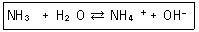
- NH3-OH-, H2O-NH4+
- NH3-NH4+, H2O-OH-
- H2O-NH3, NH4+-OH-
- H2O-NH4+, NH3-OH-
(정답률: 77%)
26. 산화-환원적정에서 산화제 자신이 지시약으로 작용하는 산화제는?
- 시륨 이온(Ce4+)
- 아이오딘(I2)
- 과망간산 이온(MnO4-)
- 중크롬산 이온(Cr2O72-)
(정답률: 67%)
27. 염산의 표준화를 위하여 사용하는 탄산나트륨을 완전히 건조하지 않았다면 표준화된 염산의 농도는 완전히 건조한 (무수)탄산나트륨을 사용하여 표준화했을 때의 염산 농도에 비해 어떻게 되는가?
- 높게 된다.
- 낮게 된다.
- 탄산나트륨에 있는 물의 양과 무관하다.
- 같은 농도를 갖는다.
(정답률: 68%)
28. 다음의 단위 변화에서 알맞은 숫자를 차례대로 나타낸 것은 무엇인가?
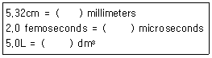
- 0.532, 2.0×109, 5.0
- 53.2, 2.0×109, 5.0×10-3
- 53.2, 2.0×10-9, 5.0
- 53.2, 2.0×10-9, 5.0×10-3
(정답률: 39%)
29. S4O62- 이온에서 황(S)의 산화수는 얼마인가?
- 2
- 2.5
- 3
- 3.5
(정답률: 69%)
30. Mn2+가 들어 있는 시료용액 50ml를 0.1M EDTA 용액 100ml와 반응시켰다. 모든 Mn2+와 반응하고 남은 여분의 EDTA를 금속지시약을 사용하여 0.1M Mg2+용액으로 적정하였더니 당량점까지 50ml가 소비되었다. 시료용액에 들어있는 Mn2+의 농도는 몇 M인가?
- 0.1
- 0.2
- 0.3
- 0.4
(정답률: 67%)
31. 갈바니전지를 선 표시법으로 옳게 나타낸 것은?
- Cd(s)║CdCl2(aq)|AgNO3(aq)║Ag(s)
- Cd(s)|CdCl2(aq), ║AgNO3(aq)|Ag(s)
- Cd(s), CdCl2(aq), AgNO3(aq), Ag(s)
- Cd(s), CdCl2(aq)|AgNO3(aq), Ag(s)
(정답률: 74%)
32. 다음 중 산화전극(anode)에서 일어나는 반응이 아닌 것은?
- Ag+e-→Ag(s)
- Fe2+→Fe3++e-
- Fe(CN)64-→Fe(CN)63-+e-
- Ru(NH3)62+→Ru(NH3)63++e-
(정답률: 67%)
33. NaF와 NaClO4이 0.⑤0M 녹아 있는 두 수용액에서 각각 불화칼슘(Ca2++2F-)을 포화용액으로 만들었다. 각 용액에 녹은 칼슘 이온(Ca2+)의 몰 농도(M)의 비율
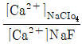
은? (단. 용액의 이온세기가 0.⑤0M일 때, 활동도계수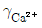
=0.485, γF=0.81이고, CaF2의 용해도곱상수 KSP=3.9×10-11이다.)- 23
- 123
- 1568
- 6326
(정답률: 24%)
34. EDTA(etylenediaminetetraacetic acid, H4Y)를 이용한 금속 Mn+ 적정으로 조건 형성상수(conditional formation constant) Kf'에 대한 설명 중 잘못된 것은? (단, Kf는 형성상수이다.)
- EDTA(H4Y) 화학종중 [Y4-]의 농도 분율을 αY4-로 나타내면, αY4-=[Y4-]/[EDTA]이고, Kf'=αY4-Kf이다.
- Kf'는 특정한 pH에서 MYn-4의 형성을 의미한다.
- Kf'는 PH가 높을수록 큰 값을 갖는다.
- Kf'를 이용하면 해리된 EDTA의 각각의 이온농도를 계산할 수 있다.
(정답률: 48%)
35. 산/염기 적정에 관한 설명으로 옳은 것은?
- 약산의 해리상수 Ka의 양은 대수인 pKa는 양의 값을 가지며, pKa가 큰 값일수록 강산이다.
- 유기산의 pKa가 큰 값일수록 해리 분율이 크다.
- 약산을 강염기로 정정시에 당량점의 pH는 7보다 큰 값으로 산성을 나타낸다.
- 0.10M이 양성자산 H2A(Ka1/Ka2＞104) 10.0mL를 0.075M KOH로 적정할 때 적정곡선(pH vs. KOH의 적정량)은 2개의 변곡점을 나타낸다.
(정답률: 49%)
36. Br-를 함유한 용액 10.00ml를 과량의 AgNO3로 처리하여 0.5g의 AgBr을 침전시켰다. 미지시료 중의 Br-의 물농도는 약 몇 M 인가? (단, AgBr의 화학식량을 187.77g/mol이다.)
- 0.266
- 0.133
- 0.0266
- 0.0133
(정답률: 56%)
37. 0.1M의 Fe2+ 50mL를 0.1M의 TI3+로 적저한다. 반응식과 각각의 표준환원전위가 다음과 같을 때 당량점에서 전위(V)는 얼마인가?
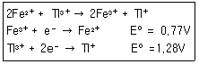
- 0.94
- 1.02
- 1.11
- 1.20
(정답률: 38%)
38. 0.⑤M Na2S04 용액의 이온세기는 얼마인가?
- 0.⑤M
- 0.10M
- 0.15M
- 0.20M
(정답률: 64%)
39. 부피분석의 한 가지 방법으로 용액 중의 어떤 물질에 대하여 표준용액을 과잉으로 가하여, 분석물질과의 반응이 완결된 다음 미반응의 표준용액을 다른 표준용액으로 적정하는 방법은?
- 정적방법
- 후적정법
- 직접적정법
- 역적정법
(정답률: 70%)
40. 다음 중 염기로 작용하지 않는 것은?
- H2N-CH2CH2CH3
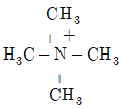
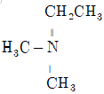
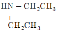
(정답률: 52%)
3과목: 기기분석I
41. 적외선흡수스펙트럼에서 흡수 봉우리의 파수는 화학결합에 대한 힘 상수의 세기와 유효질량에 의존한다. 다음 중 흡수 파수가 가장 클 것으로 예상되는 신축 진동은?
- ≡C-H
- ≡C-H
- -C-H
- -C≡C-
(정답률: 64%)
42. 전자기복사선을 이용하는 일반 분광광도법에 사용되는 분광법의 종류와 그 파장범위가 옳지 않게 짝지어진 것은?
- 전자스핀공명-3mm
- 핵자기공명-0.6~10m
- X-선 흡수, 방출, 형광 및 회절-0.1~100Å
- 자외선과 가시선 흡수, 방출 및 형광-180~780m
(정답률: 42%)
43. 전열 원자화장치의 성능 특성에 대한 설명으로 틀린 것은?
- 측정농도 범위가 보통 102정도로 좁다.
- 보통 원소당 수 분씩 걸릴 정도로 느리다.
- 큰 부피의 사료에서도 매우 높은 감도를 나타낸다.
- 불꽃이나 플라스마 원자화장치가 적당한 검출한계를 나타내지 못할 경우에만 사용한다.
(정답률: 43%)
44. X선 형광법(XRF)에 대한 설명으로 틀린 것은?
- 실험과정이 빠르고 편리하다.
- 원자번호가 작은 가벼운 원소 측정에 편리하다.
- 비파괴 분석법이어서 시료에 손상을 주지 않는다.
- 스펙트럼이 비교적 단순하여 스펙트럼선 방해 가능성이 적다.
(정답률: 64%)
45. 원자분광법에서 사용하는 바탕보정 방법이 아닌 것은?
- Zeeman 바탕보정
- Doppler 바탕보정
- 중수소 램프 바탕조정
- 빛살 토막내기 바탕보정
(정답률: 32%)
46. 다음 중 전도성 고체를 원자분광기에 도입하여 사용하기에 가장 적합한 방법은?
- 전열 증기화
- 레이저 증발
- 초음파 분무법
- 스파크 증발법
(정답률: 53%)
47. X-선 파장이 고체 시료에서 원자 사이의 거리와 같은 정도이기 때문에 일어나는 현상과 이에 기반된 분광법이 옳게 짝지어진 것은?
- 방출, X-선 회절법
- 산란, X-선 회절법
- 방출, X-선 형광 분광법
- 산란, X-선 형광 분광법
(정답률: 39%)
48. 어떤 시료의 흡광도(A)의 값이 0.379이라면 흡광도를 퍼센트 투광도로 나타낸 것은?
- 11.8
- 21.8
- 31.8
- 41.8
(정답률: 63%)
49. 500nm의 가시복사선의 광자 에너지는 약 몇 J인가? (단, Plank상수는 6.63×10-34Jㆍs, 빛의 속도는 3.00×108m/s이다.)
- 1.00×10-19
- 1.00×10-10
- 4.00×10-19
- 4.00×10-10
(정답률: 60%)
50. 탄소-13 NMR스펙트럼에서 양성장 짝풀림(proton decoupling)을 위해 이용되지 않는 방법은?
- 펄스 짝풀림(pulsed decoupling)
- 넓은 띠 짝풀림(broadband decoupling)
- 공명 없는 짝풀림(off-resonance decoupling)
- 동핵 스핀 짝풀림(homonuclear spin decoupling)
(정답률: 45%)
51. 원적외선 영역의 몇몇 광원에서 나오는 복사선의 세기는 아주 약하여 높은 회절차수들의 빛이 검출기에 들어오지 못하도록 사용되는 차수 분류필터에 의해서 더욱 약해진다. 이런 문제를 해결하기 위하여 사용된 기기를 무엇이라 하는가?
- Fourier 변환 분광계
- Plasma 분광계
- 분자 형광 분광계
- 분자 발광 분광계
(정답률: 69%)
52. 분광법으로 흡광도를 측정할 때 나타나는 기기 잡음이 아닌 것은?
- 광원의 깜박이 잡음
- 광전 검출기의 산란 잡음
- 열검출기의 Johnson 잡음
- 단색화장치에서의 경로오차에 의한 잡음
(정답률: 53%)
53. 원자흡수분광기에 가장 많이 사용하는 광원은?
- 레이저
- 텅스텐램프
- 속빈음극관
- D2램프
(정답률: 57%)
54. C=0의 힘상수는 1×103N/m이고 C-O의 힘상수가 5×102N/m라고 하자. C=0의 신축진동이 1700cm-1 근처에서 나타난다면 C=0는 대략 어느 곳에서 나타나겠는가?
- 850cm-1
- 1200cm-1
- 1700cm-1
- 2400cm-1
(정답률: 33%)
55. 신호대잡음비(signal-to-noise ratio)를 5배 증가시키기 위하여 몇 회 반복측정을 하여야 하는가?
- 5회
- 25회
- 125회
- 3125회
(정답률: 73%)
56. 반사식 회절발 파장선택기의 분산능과 분해능에 대한 설명으로 틀린 것은?
- 회절발의 크기가 같을 때 분산능은 복사선의 파장에 무관하다.
- 회절발의 크기가 같을 때 선분산능의 클수록 분해능이 크다.
- 회절발의 크기가 같을 때 각분산능이 클수록 분해능이 크다.
- 회절발의 크기가 같을 때 홈 간 거리가 클수록 분해능이 크다.
(정답률: 56%)
57. 물(H2O) 분자의 진동(Vibration) 방식(mode)과 적외선 흡수 스펙트럼에 대한 다음 설명 중 옳은 것은?
- 물의 진동 방식은 2가지이고 적외선 스펙트럼의 흡수대는 2개가 나타난다.
- 물의 진동 방식은 3가지이고 적외선 스펙트럼의 흡수대는 3개가 나타난다.
- 물의 진동 방식은 3가지이고 적외선 스펙트럼의 흡수대는 2개가 나타난다.
- 물의 진동 방식은 2가지이고 적외선 스펙트럼의 흡수대는 3개가 나타난다.
(정답률: 55%)
58. NMR기기에서 자석은 자기장과 관련이 있으므로 중요한 부품이다. 감도와 분해능이 자석의 세기와 질에 따라서 달라지므로 자장의 세기를 정밀하게 조절하는 것이 중요하다. 다음 중 NMR기기에서 사용되는 초전도자석장치의 특징이 아닌 것은?
- 자기장의 균일하고 재현성이 높다.
- 초전도자석의 자기장이 일반 전자석보다 세다.
- 전자석보다 복잡한 구조로 되어 있으므로 작동비가 많이 든다.
- 초전도성을 유지하기 위해서 Nb/Sn이나 Nb/Ti 합금선으로 감은 솔레노이드를 사용한다.
(정답률: 61%)
59. 형광(Fluorescence)에 대한 설명으로 가장 적절한 것은?
- σ*→σ 전이에서 주로 발생한다.
- pyridine, furan 등 간단한 헤테로 고리화합물은 접합고리구조를 갖는 화합물보다 형광을 더 잘 발생한다.
- 전형적으로 형광은 수명이 약 10-10~10-5s 정도이다.
- 250nm 이하의 자외선을 흡수하는 경우에 형광을 방출한다.
(정답률: 56%)
60. IR을 흡수하려면 분자는 어떤 특성을 가지고 있어야 하는가?
- 분자구조가 사면체이면 된다.
- 공명구조를 가지고 있으면 된다.
- 분자 내에 π결합이 있으면 된다.
- 분자 내에서 쌍극자 모멘트의 변화가 있으면 된다.
(정답률: 73%)
4과목: 기기분석II
61. 각 원소의 동위원소 존재비가 아래의 표와 같다. 화합물 C10H6Br2의 (M+2)+/M+봉우리의 비에 가장 가까운 값은?
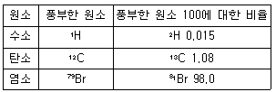
- 1.1
- 2.0
- 2.6
- 6.6
(정답률: 28%)
62. 이온 사이클로트론 공명현상을 이용할 수 있게 설계되어 있는 질량분석기는?
- 사중극자 질량분석기
- 자기장 섹터 분석기
- 비행-시간 질량분석기
- Fourier 변환 질량분석기
(정답률: 44%)
63. 액간 접촉전위(liquid junction potential)에 대한 설명으로 가장 거리가 먼 것은?
- 이온 간의 확산속도차이에 기인한다.
- 크기는 수 십 밀리볼트 정도이다.
- 일반적으로 염화칼륨이 많이 쓰인다.
- 두 용액 간에 염다리를 설치하면 완전제거가 가능하다.
(정답률: 61%)
64. Var Deemter 도시로부터 얻을 수 있는 가장 유용한 정보는?
- 이동상의 적정한 유속(flow rete)
- 정지상의 적절한 온도(temperature)
- 분석물질의 머무름 시간(retention time)
- 선택 계수([α], selectivity coefficient)
(정답률: 61%)
65. 0.1M Cu2+가 Cu(s)로 99.99% 환원되었을 때 필요한 환원전극 전위는 몇 V인가?
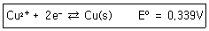
- 0.043
- 0.19
- 0.25
- 0.28
(정답률: 49%)
66. 이온 선택성 막전극에서 막 또는 막의 매트릭스 속에 함유된 몇 가지 화학종들을 분석물 이온과 선택적으로 결합할 수 있어야 한다. 이 때 일반적인 결합의 유형이 아닌 것은?
- 이온교환
- 침전화
- 결정화
- 착물형성
(정답률: 47%)
67. 액체 크로마토그래피 방법 중 가장 널리 이용되는 방법으로써 고체 지지체 표면에 액체 정지상 얇은 막을 형성하여 용질이 정지상 액체와 이동상 사이에서 나뉘어져 평형을 이루는 것을 이용한 크로마토그래피법은?
- 흡착 크로마토그래피
- 분배 크로마토그래피
- 이온교환 크로마토그래피
- 분자배제 크로마토그래피
(정답률: 42%)
68. 벗김법(stripping method)이 다른 전압전류법보다 감도가 좋은 가장 큰 이유는?
- 매우 빠른 속도로 측정할 수 있으므로
- 전위를 변화시키면서 전류를 측정하므로
- 전기분해과정을 통해 분석물이 농축되므로
- 적하전극에서 일반적인 작용기들이 산화나 환원되기 때문에
(정답률: 62%)
69. 질량 이동(mass transfer) 메카니즘 중 전지 내의 벌크 용액에서 질량이동이 일어나는 주된 과정으로서 정전기장 영향 아래에서 이온이 이동하는 과정을 무엇이라고 하는가?
- 확산(diffusion)
- 대류(convection)
- 전도(conduction)
- 전기 이동(migration)
(정답률: 50%)
70. 크로마토그램에서 얻어진 봉우리를 주는 성분에 대한 기기의 감도인자를 알고 각 봉우리의 면적의 합에 대한 분석성분 봉우리의 면적 비로 함량을 분석하는 방법은?
- 표준물 첨가법(standard addition method)
- 내부 표준물법(internal standard method)
- 면적 표준화법(area normalization method)
- 표준물 검정곡선법(standard calibration curve method)
(정답률: 65%)
71. 크로마토그래피에서 관의 성능을 비교하기 위해 도입된 관의 이론적 단수를 실험적으로 구하는데 필요한 것으로만 옳게 나열된 것은?
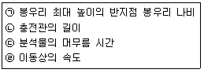
- ㉠, ㉡
- ㉠, ㉢
- ㉠, ㉣
- ㉡, ㉣
(정답률: 62%)
72. 이온선택성 전극의 장점에 대한 설명 중 틀린 것은?
- 파괴성
- 짧은 감응시간
- 직선적 감응의 넓은 범위
- 색깔이나 혼탁도에 영향을 비교적 받지 않음
(정답률: 66%)
73. 분자질량분석법에서 사용되는 이온화장치는 크게 기체-상이온화장치와 탈착식이온화장치(desorption source)로 나누어진다. 탈착 이온화장치에 적용되는 시료에 대한 설명으로 틀린 것은?
- 비휘발성 시료에 적용이 가능하다.
- 열에 불안정한 시료에 적용할 수 있다.
- 액체 시료를 증발시키기 않고 직접 이온화시킨다.
- 일반적으로 1000 이하의 분자량을 갖는 시료에 적용이 가능하다.
(정답률: 50%)
74. 얇은 층 크로마토그래피에서 시료 전개 시점부터 전개 용매가 이동한 거리가 7cm, 용질 A가 이동한 거리가 4.5cm라면 자연인자(RF) 값은 얼마인가?
- 0.56
- 0.64
- 2.5
- 4.5
(정답률: 65%)
75. 전압전류법에서 사용되는 미세전극은 크기가 작아서 생체세포나 혈액 등에 직접 사용할 수도 있으며, 앞으로도 많은 연구가 예상되는 전극이다. 미세전극의 장점에 대한 설명으로 가장 거리가 먼 것은?
- 전류의 면적이 작기 때문에 전류가 아주 작게 흐른다.
- 옴 손실이 적기 때문에 저항이 큰 용액이나 비수용매에 유용하다.
- 빠른 전압의 주사로 수명이 짧은 화학종의 연구가 가능하다.
- 일반적인 전극보다 페러데이 전류가 높아서 검출한계를 낮춘다.
(정답률: 46%)
76. 중합체를 분석하는 시차주사 열량법(DSC)에 대한 설명으로 옳지 않은 것은?
- 시료와 기준물질 간의 온도 차이를 측정한다.
- 결정화 온도(Tc)는 발열 봉우리로 나타난다.
- 유리전이 온도(Tg) 전후에는 열흐름(heat flow)의 변화가 생긴다.
- 결정화 온도(Tc)는 유리전이 온도(Tg)와 녹는점 온도(Tm)사이에 위치한다.
(정답률: 40%)
77. 기체크로마토그래피법에서 시료의 주입방법은 크게 분할주입과 비분할주입으로 나뉜다. 다음 중 분할주입(spilt injection)에 대한 설명이 아닌 것은?
- 열적으로 안정하다.
- 기체시료에 적합하다.
- 고농도 분석물질에 적합하다.
- 불순물이 많은 시료를 다룰 수 있다.
(정답률: 50%)
78. 기체-액체 크로마토그래피(GLC)는 기체 크로마토그래피의 가장 흔한 형태로 이동상으로 기체를, 고정상으로는 액체를 사용하는 경우를 일컫는다. 이 때 이동상과 고정상 사이에서 분석물의 어떤 상호 작용이 분리에 기여하는가?
- 분배(Partition)
- 흡착(Adsorption)
- 흡수(Absorption)
- 이온교환(Ion Exchange)
(정답률: 39%)
79. 질량분석기로 CH3CH2+(m=29.03858)와 HCO+(m=29.00218) 질량피크를 분리하려면 최소로 필요한 분해능은 약 얼마인가?
- 13.6
- 27.5
- 800
- 1.25×103
(정답률: 62%)
80. 비극성 정지상의 GC에서 다음 3가지 물질, 즉 Propanol(끓는점=97℃), Butanol(끓는점=117℃), Pentanol(끓는점=138℃)을 분리했다. 다음 설명 중 옳은 것은?
- Propanol의 머무름 시간이 가장 짧다.
- Butanol의 머무름 시간이 가장 짧다.
- Pentanol의 머무름 시간이 가장 짧다.
- 머무름 시간은 3가지 물질 모두 동일하다.
(정답률: 69%)